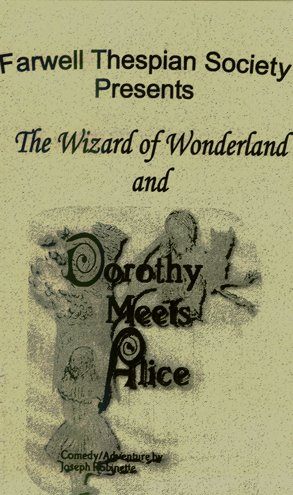
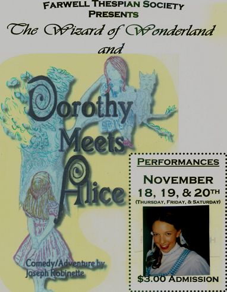
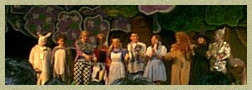
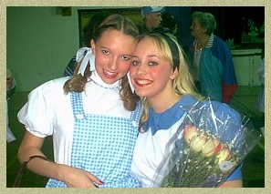
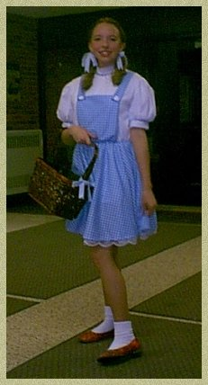

?


CAST:
Dorothy...Shana H.
Alice...Jennt M.
Judson...Rion R.
Mad Hatter...Janet P.
Scarecrow...Sara H.
White Rabbit...Korey P.
Tin Man...Stephanie D.
Dormouse...Nicole S.
Cowardly Lion...Barb G.
Wicked Witch...Bethany J.
Red Queen...Mary G.
The cast...
  
Jenny and I...
Me...as Dorothy! Mom and I had to make my "ruby red shoes".
Do you know how hard it is to find a pair!? :p
We used spray adhesive and TONS of red glitter!
I left a trail of glitter from home to the school,
for about 6 days (3 days of dress rehearsels, and 3 days of the show!) :)
SYNOPSIS:
Background by ShadyLadyGraFix © 2005
All rights reserved.